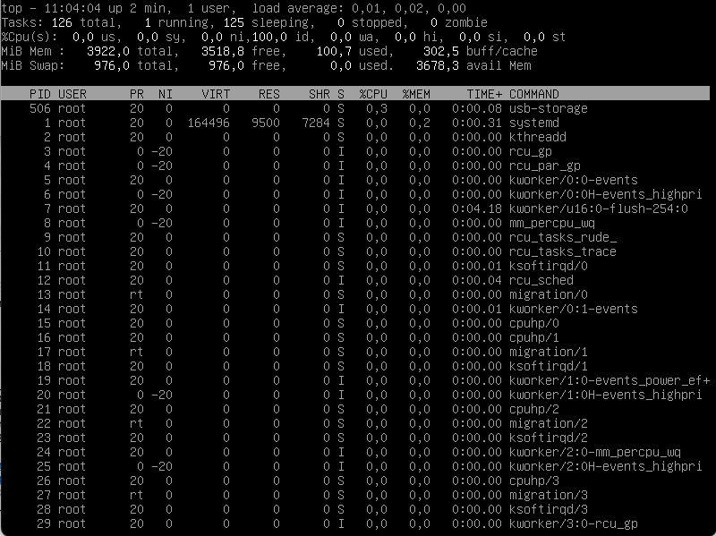
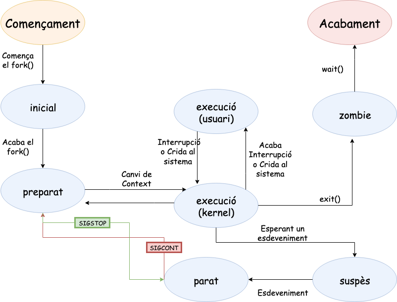
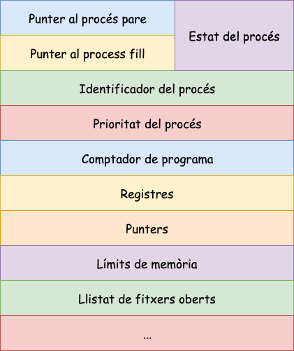
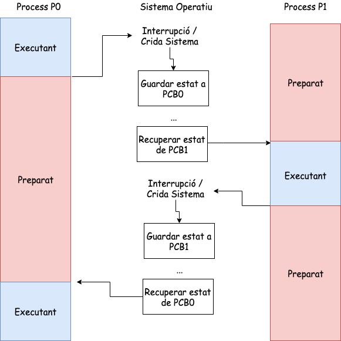
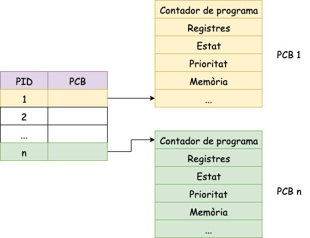

Processos a Linux
Unitat 3 · Sistemes Operatius (SO)
Què és un procés?
Un procés és una instancia d’un programa en execució (tasca). Això vol dir que si 10 usuaris d’un servidor utilitzen el mateix programa, com vi, hi ha 10 processos vi que s’executen al servidor, tot i que tots comparteixen el mateix codi executable.
- Creació i eliminació.
- Garantir l’execució i finalització.
- Controlar errors i excepcions.
- Assignació de recursos.
- Comunicació i sincronització.
ps (I)
Imagineu que utilitzem la comanda sleep 120 &. Aquest comanda ens crearà 3 processos sleep en background. La eina ps ens permet veure’ls.
ps -e
L’opció -e indica a l’ordre que mostri tots els processos del sistema. Sense aquesta opció, l’ordre només mostra els processos de l’usuari a la sessió actual.
Aquests processos tenen PID 1053, 1054 i 1054. També observeu l’ordre ps al final de la llista. Això es deu al fet que l’ordre en si també és un procés.
ps -e
PID TTY TIME CMD
1 ? 00:00:01 systemd
2 ? 00:00:00 kthreadd
3 ? 00:00:00 rcu_gp
4 ? 00:00:00 rcu_par_gp
6 ? 00:00:00 kworker/0:0H-events_highpri
9 ? 00:00:00 mm_percpu_wq
10 ? 00:00:00 rcu_tasks_rude_
11 ? 00:00:00 rcu_tasks_trace
12 ? 00:00:00 ksoftirqd/0
13 ? 00:00:03 rcu_sched
14 ? 00:00:00 migration/0
15 ? 00:00:00 cpuhp/0
17 ? 00:00:00 kdevtmpfs
18 ? 00:00:00 netns
...
1053 pts/0 00:00:00 sleep
1054 pts/0 00:00:00 sleep
1055 pts/0 00:00:00 sleep
1056 pts/0 00:00:00 psps (II)
ps -e
- La columna CMD identifica el nom del procés en execució, com ara sleep.
- La primera columna indica l’identificador de procés (PID) assignat al procés pel sistema operatiu.
- La segona columna mostra el terminal associat a un procés o ? si el procés no s’associa a cap terminal.
- Finalment, la tercera columna mostra el temps de la CPU del procés.
ps -e
PID TTY TIME CMD
1 ? 00:00:01 systemd
2 ? 00:00:00 kthreadd
3 ? 00:00:00 rcu_gp
4 ? 00:00:00 rcu_par_gp
6 ? 00:00:00 kworker/0:0H-events_highpri
9 ? 00:00:00 mm_percpu_wq
10 ? 00:00:00 rcu_tasks_rude_
11 ? 00:00:00 rcu_tasks_trace
12 ? 00:00:00 ksoftirqd/0
13 ? 00:00:03 rcu_sched
14 ? 00:00:00 migration/0
15 ? 00:00:00 cpuhp/0
17 ? 00:00:00 kdevtmpfs
18 ? 00:00:00 netns
...
1053 pts/0 00:00:00 sleep
1054 pts/0 00:00:00 sleep
1055 pts/0 00:00:00 sleep
1056 pts/0 00:00:00 psps (III)
- L’identificador de procés (PID) és un identificador únic per a un procés.
- El sistema operatiu utilitza un comptador de 32 bits last_pid per fer un seguiment de l’últim PID assignat a un procés.
- Quan es crea un procés, el comptador augmenta i el seu valor es converteix en el PID del nou procés.
- El kernel ha de comprovar si el valor de last_pid++ ja pertany a una tasca, abans que pugui assignar-lo a un procés nou.
ps -e
PID TTY TIME CMD
1 ? 00:00:01 systemd
2 ? 00:00:00 kthreadd
3 ? 00:00:00 rcu_gp
4 ? 00:00:00 rcu_par_gp
6 ? 00:00:00 kworker/0:0H-events_highpri
9 ? 00:00:00 mm_percpu_wq
10 ? 00:00:00 rcu_tasks_rude_
11 ? 00:00:00 rcu_tasks_trace
12 ? 00:00:00 ksoftirqd/0
13 ? 00:00:03 rcu_sched
14 ? 00:00:00 migration/0
15 ? 00:00:00 cpuhp/0
17 ? 00:00:00 kdevtmpfs
18 ? 00:00:00 netns
...
1053 pts/0 00:00:00 sleep
1054 pts/0 00:00:00 sleep
1055 pts/0 00:00:00 sleep
1056 pts/0 00:00:00 pstop

Estats dels processos
- Nou: Procés que encara no està creat del tot, li falta el PCB.
- Inactiu: Quan un procés ha finalitzat.
- Preparat: Quan un procés té assignats tots els recursos necessaris per poder executar-se (excepte la CPU).
- Execució: Quan un procés té assignada la CPU.
- Espera: Quan al procés li falta algun recurs per poder executar-se.
Per veure informació dels processos en UNIX tornarem a fer servir la comanda ps. Si fem man ps i busquem PROCESS STATE CODES, veurem el següents estats:
- D uninterruptible sleep (usually IO)
- I Idle kernel thread
- R running or runnable (on run queue)
- S interruptible sleep (waiting for an event to complete)
- T stopped by job control signal
- t stopped by debugger during the tracing
- W paging (not valid since the 2.6.xx kernel)
- X dead (should never be seen)
- Z defunct (“zombie”) process, terminated but not reaped by its parent
ps (IV)
Es pot mostrar més informació sobre la llista de processos mitjançant l’opció -l de l’ordre ps:
La primera columna (F) de la sortida anterior identifica els indicadors de procés (vegeu la pàgina del manual si esteu interessats). La columna (S) indica l’estat d’un procés.
Recordeu que sense l’opció -e,
psnomés mostra els processos al terminal actual, en aquest cas pts/0.
Arbre de processos
- Estructura jeràrquica dels processos en formada d’arbre.
- Tots els processos tenen un procés pare, excepte el procés inicial (PID = 1).
- Els processos poden tenir zero o més processos fills.
- Els atributs PID i PPID identifiquen el procés i el seu pare.
En l’exemple anterior, podeu veure que el procés bash és el pare dels processos sleep i ps. Si esteu connectats per ssh al servidor, el procés bash és fill del procés sshd. I el procés sshd és fill del procés init (PID = 1).
Qui és el pare de PID=1?
El procés amb PID = 1 és el primer procés que s’inicia quan el sistema arrenca. Aquest procés es coneix com a init (o systemd en sistemes més moderns) i és el pare de tots els altres processos en execució al sistema.
- Aquest procés el crea el kernel durant el procés d’arrencada del sistema operatiu.
- El kernel és responsable de carregar i iniciar el sistema operatiu.
- Aquest és l’únic procés que no té un procés pare, ja que és el primer procés que s’inicia en el sistema.
Què és un procés inactiu?
Un procés inactiu és un procés que esta esperant a que succeeixi un esdeveniment per poder continuar la seva execució.
Aquest esdeveniment pot ser una entrada de l’usuari, la finalització d’una operació d’entrada/sortida, o qualsevol altra condició que el procés necessita per continuar.
La majoria dels processos del sistema són inactius, que esperen algun tipus d’esdeveniment, com ara fer clic amb el ratolí o prémer una tecla. A l’exemple anterior, l’única ordre en execució és ps.
pstree
ps -l
F S UID PID PPID C PRI NI ADDR SZ WCHAN TTY CMD
4 S 0 1034 1007 0 80 0 - 2095 - pts/0 bash
0 T 0 1059 1034 0 80 0 - 3448 - pts/0 vi
0 T 0 1066 1034 0 80 0 - 3448 - pts/0 vim
0 T 0 1068 1034 0 80 0 - 2358 - pts/0 top
0 T 0 3502 1034 0 80 0 - 30692 - pts/0 emacs
0 T 0 3505 1034 0 80 0 - 30692 - pts/0 emacs
4 R 0 3569 1034 0 80 0 - 2405 - pts/0 pspstree
systemd-|-agetty
|--cron
|--dbus-daemon
|--dhclient---3*[{dhclient}]
|--exim4
|--rsyslogd---3*[{rsyslogd}]
|--sshd-|-sshd---bash-|-2*[emacs---{emacs}]
| | |--pstree
| | |--top
| | |--vi
| | |--vim
| |--sshd---bash---emacs---{emacs}
|--systemd---(sd-pam)
|--systemd-journal
|--systemd-logind
|--systemd-timesyn---{systemd-timesyn}
|--systemd-udevd
|--wpa_supplicantDiagrama de transició d’estats (I)
El temps de vida d’un procés X pot ser dividit en un conjunt d’estats que descriuen el comportament de l’procés.
- Executant-se en mode usuari.
- Executant-se en mode nucli o supervisor.
- Preparat en memòria principal per a ser executat. El procés no està executant, però està carregat en memòria principal. A punt per ser executat quan el planificador de processos ho decideixi.
Diagrama de transició d’estats (II)
- Dormit o bloquejat en memòria principal. El procés es troba esperant en memòria principal a què es produeixi un determinat esdeveniment, com per exemple, la finalització d’una operació d’E/S.
- Preparat en memòria secundària per a ser executat. El procés esta preparat per a ser executat, però està intercanviat a memòria secundària (disc).
- Dormit o bloquejat en memòria secundària. El procés està esperant en memòria secundària a què es produeixi un determinat esdeveniment.
Diagrama de transició d’estats (III)
- Creat. El procés s’ha creat recentment i està en un estat de transició. El procés existeix, però no es troba preparat per ser executat ni tampoc està adormit. Aquest estat és l’inicial per a tots els processos.
- Zombi. Aquest és l’estat final d’un procés. S’arriba mitjançant l’execució explícitament o implícita de la crida a sistema
exit.
Diagrama de transició d’estats (IV)
- Expropiat. Quan un procés (A) executant-se en mode usuari ha finalitzat el seu temps:
- El SO envia una interrupció del rellotge de sistema.
- El tractament d’aquesta interrupció s’ha de fer en mode kernel.
- S’expropia el procés A i un cop en mode kernel el planificador de processos pot decidir quin és el següent procés que s’executarà.
L’estat expropiat es similar a l’estat preparat en memòria principal per ser executat, però un procés expropiat té garantit que el seu pròxim estat serà execució en mode usuari quan torni a ser planificat per ser executat
Diagrama de transició d’estats (V)

Transicions d’estat: Creació i execució d’un procés
Quan un nou procés (A) es crea, mitjançant una crida a sistema fork realitzada per un altre procés (B), el primer estat en què entra A és l’estat creat. Des d’aquí pot passar, depenent de si hi ha prou espai en memòria principal: a) preparat per a execució en memòria principal o b) preparat per a execució en memòria secundària.
Transicions d’estat: Crida a sistema
- Un procés A invoca en mode usuari una crida a sistema, per exemple
read(), per llegir dades d’un fitxer. En aquest moment el procés A passa a l’estat execució en mode nucli on s’executa la crida a sistema. read()necessita realitzar una operació d’E/S amb el disc, llavors el kernel ha d’esperar que es completi l’operació.- El procés A passa a l’estat adormit en memòria principal.
- Quan es completa l’operació d’E/S, el maquinari interromp a la CPU i el manipulador de la interrupció despertarà el procés, la qual cosa provocarà que passi a l’estat preparat per a execució en memòria.
Transicions d’estat: Execució en memòria secundària
- Suposem que en el sistema s’estan executant molts processos i que no hi ha prou espai en memòria.
- El SO tria per ser intercanviats a memòria secundària a alguns processos que es troben en l’estat preparat per a execució en memòria principal o en l’estat expropiat.
- Aquests processos passaran a l’estat preparat per a execució en memòria secundària.
- Per tornar a tenir possibilitat d’executar-se, aquests processos hauran de ser intercanviats de nou a memòria principal.
Transicions d’estat: Retorn a memòria principal
- En un moment donat, l’intercanviador tria el procés més apropiat per intercanviar a la memòria principal.
- Aquest passa a l’estat preparat per a execució en memòria.
- El planificador en algun instant triarà el procés per executar-se i llavors passarà a l’estat execució.
Transicions d’estat: Finalitzant el procés
Quan el procés es completi, invocarà explícitament o implícitament a la crida a sistema exit, en conseqüència passarà a l’estat execució en mode supervisor. Quan es completi aquesta crida a sistema passarà finalment a l’estat zombi.
Qui controla les transicions d’estat?
Un procés té control sobre algunes transicions d’estat. En primer lloc, un procés pot crear un altre procés. No obstant això, és el kernel qui decideix en quin moment es realitzen la transició des de l’estat creat a l’estat preparat per a execució en memòria principal o a l’estat preparat per a execució en memòria secundària.
Qui controla les transicions d’estat?
Un procés pot invocar una crida a sistema, el que provocarà que passi de l’estat execució en mode usuari a l’estat execució en mode kernel. No obstant això, el procés no té control de quan tornarà d’aquest estat, fins i tot alguns esdeveniments poden produir que mai retorni i passi a l’estat zombi.
Qui controla les transicions d’estat?
Un procés pot finalitzar realitzant una invocació explícita de la crida a sistema exit, però d’altra banda esdeveniments externs també poden fer que es produeixi l’acabament de l’procés.
Qui controla les transicions d’estat?
La resta de les transicions d’estat segueixen un model rígid codificat en el nucli. Per tant, el canvi d’estat d’un procés davant l’aparició de certs esdeveniments es realitza d’acord a unes regles predefinides.
Exemples pràctics (I)
- Obrirem 2 terminal i ens connectarem a debian per ssh.
- Anirem al terminal 1 i crearem un procés:
sleep 120. - Anirem al terminal 2 i observarem com el procés sleep es troba en estat (S - Interruptible sleep).
- En la terminal 1 clicarem control-z (aquesta combinació serveix per aturar qualsevol procés).
- Anirem al terminal 2 i observarem que l’estat del procés sleep es (T - Stopped by job control signal).
- Anirem al terminal 1 i llençarem l’orde
bg. Aquesta orde llança el procés pausat en segon pla (similar a executar-lo amb & al final, deixant el terminal lliure). - Anirem al terminal 2 i observarem com el procés sleep ha retornat a l’estat (S - Interruptible sleep).
Exemples pràctics (II)
- Obrirem 1 terminal i ens connectarem a debian per ssh.
- Crearem un procés en background:
sleep 120 & - Observarem com el procés sleep es troba en estat (S - Interruptible sleep).
- Enviarem un senyal per aturar el procés:
kill -STOP {PID del procés sleep} - Observarem com el procés sleep ha retornat a l’estat (T - stopped by job control signal).
- Enviarem un senyal per continuar l’execució del procés:
kill -CONT {PID del procés sleep}
Espiant un procés amb strace
En una terminal executem un procés. Per exemple:
En un altra terminal executem la següent instrucció:
- Si en l’output de la comanda observem que el procés està parat en crides a sistema del tipus
read()el procés està esperant entrada de dades. - En altres casos, veurem quines són les crides a sistema que està realitzant el procés.
PCB (Process Control Block)
El PCB és una estructura de dades que permet al sistema operatiu supervisar i control un procés.
- Informació guardada al PCB:
- Punters.
- Estat del procés.
- Identificadors.
- Taula de fitxers oberts.
- Recursos assignats.
- Context dels registre de CPU.
- Informació sobre la mèmoria.
- Informació sobre la planificació.

Estructura del PCB (I)
El PCB de Linux es defineix a struct task_struct al fitxer sched.h.
- volatile long state: conté l’estat del procés. Que la variable estigui declarada com volatile li indica a l’compilador que el seu valor pot canviar-se de forma asíncrona (per exemple des d’una rutina de tractament d’interrupció).
- struct thread_info * thread_infp: Conté informació de baix nivell sobre el procés: flags, estatus, cpu, domini d’execució, etc.
- unsigned long flags: conté l’estat detallat de l’procés dins el nucli. Representa el cicle de vida d’un procés. Cada bit indica un possible esdeveniment i no són mútuament exclusius.
- unsigned long ptrace: Informació sobre la monitorització un procés.
Estructura del PCB (II)
- int exit_state, int exit_code, exit_signal: Contenen l’estat del procés a l’acabar, el valor de terminació d’un procés, en cas que hi hagi finalitzat mitjançant la crida a sistema
exit (2)o, si acaba per un senyal, contindrà el identificador de senyal que el va matar. - pid_t pid: Conté l’identificador de l’procés.
- pid_t tpid: Conté l’identificador del grup de processos. Coincideix amb l’identificador de el lider de el grup.
- uid_t uid, euid, suid, fsuid: Usuari propietari d’aquest procés, tant real (uid), com efectiu (euid), i atributs més específics.
- gid_t gid, Egid, sgid, fsgid: Grup propietari d’aquest procés, tant real (gid), com efectiu (Egid), i atributs més específics.
Intercanvi de processos (I)

Intercanvi de processos (II)
El kernel gestiona una estructura de taula (diccionari) semblant a la representada en la imatge següent per poder accedir de forma eficient als diferents PCBs. Aquesta estrcutura de dades es coneix com a Taula PCB.

/proc
- cmdline: Conté l’ordre que comença el procés, amb tots els seus paràmetres.
- cwd: Enlace simbòlic al directori de treball actual (directori de treball actual) del procés.
- environ: Conté totes les variables d’entorn per al procés.
- fd: Conté els descriptors d’arxiu per al procés, mostrant els fitxers o dispositius que estan utilitzant.
- maps, statm i mem: Conté informació relacionada amb la memòria en ús pel procés.
- stat and status: Conté nformació sobre l’estat del procés.
Això és tot per avui
TAKE HOME MESSAGE
La gestió de processos a Unix/Linux és crucial per a una utilització eficient del sistema i una correcta assignació de recursos. El directori /proc ofereix accés als PCBs que contenen informació sobre cada procés en execució.


Unitat 3 · Sistemes Operatius (SO) 🏠